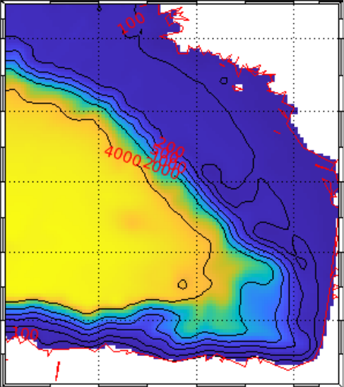

Course
OPCB205 - Ocean 3D Modelling
| Bathymetry of my model |  |
| ??? |  |
To download my report click [PDF file]
To download my presentation click [PDF file]
Last update of this page: 28/03/2026
| Bathymetry of my model |  |
| ??? | |